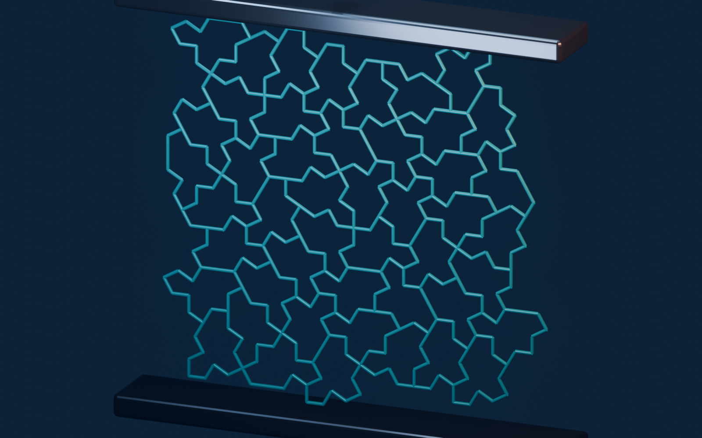
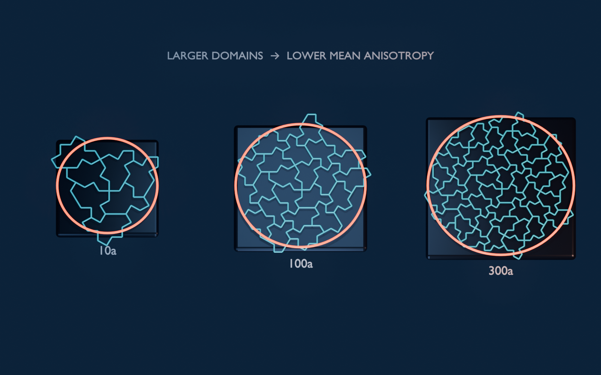

Materials science and fluids
Metamaterials, lattices, electrodes, exchangers, and porous media candidates.
Geometry as a material parameter
Engineers tune performance by changing geometry: pores, channels, lattices, electrodes, exchangers, and support structures. Periodic geometries bring resonances and preferred failure planes; random geometries bring variance and poor reproducibility. Aperiodic monotile arrays give a controlled middle path, deterministic, manufacturable from a single element, and provably free of translational symmetry.[2]

The evidence that this matters physically is accumulating: a specified tight-binding spectrum on the Hat vertex graph,[20] modified phase behavior for spins,[21] distinctive dimer combinatorics,[22] and measured chiral optical response.[19] Related lattice families from Sturmian systems[13] and iterated function systems[14] extend the design space beyond the monotile itself.
Mechanical evidence is substantial but heterogeneous. It includes printed Hat-wall honeycombs,[42] numerical continuum limits,[43] Tile(a,b) parameter sweeps,[44] ideal beam networks,[45] multiphase fracture panels,[46][49] and three-dimensional lattices that are only inspired by monotiles.[64][65] Those are different specimens and different claims. The sections below keep their materials, controls, methods, and evidence levels separate.
Several papers label new lattices “einstein monotile” while using geometry inspired by rather than identical to Smith’s Hat or Spectre, see refs. [62] and [64]-[65]. Always verify whether a source uses canonical tile outlines or a derivative mesh.
Canonical Hat-family honeycombs
Poisson’s ratio measures sideways strain under axial loading. Clarke and colleagues printed 50 × 50 × 50 mm PLA cellular specimens whose walls followed a finite Hat tiling. An Ultimaker S3 deposited two-toolpath, 0.5 mm walls through a 0.4 mm nozzle in 0.2 mm layers. ASTM D1621 compression used a 50 kN Instron load cell at 0.5 mm/min to 25% strain; digital image correlation used 31-pixel subsets. Relative-density and orientation sweeps were compared with a hexagonal honeycomb. The Hat architecture returned Poisson ratios of 0.010-0.048 above relative density 0.225 and 0.018-0.075 at or below it.[42] “Zero” here means experimentally near zero for these finite specimens, not an exact property of every Hat-shaped object.

Rieger and Danescu asked a different question: whether increasingly large ideal Hat networks approach continuum isotropy. In spring-and-angle and Timoshenko-beam simulations, the mean anisotropy index fell from about 6.8 × 10−2 at radius 10a to 4.3 × 10−4 at 300a, using ten realizations at each scale.[43] The first seven inflation generations contain 4, 25, 169, 1,156, 7,921, 54,289, and 372,100 polygons, which helps explain the slow approach to a continuum response. This is a computational scale-limit result; a small printed panel can remain boundary-dominated and direction-dependent. The demonstrated Timoshenko-beam convergence also used an internal beam scale comparable to the tile edge. The more realistic slender-beam regime remains open.

The continuous Tile(a,b) family adds geometry as a design variable. Selected experiments and a larger computational map found Poisson ratios from about 0.006 to 0.491 and normalized moduli from approximately 0.003 to 0.056 across relative densities near 0.2-0.4.[44] Hat is Tile(1,√3); the family’s Tile(0,1), Tile(1,1), and Tile(1,0) endpoints admit periodic tilings even though generic intermediate members are aperiodic. Hat and Tile(1,1) entered a smooth, bending-dominated plateau, while other tested family members showed an initial stress drop; endpoint designs began densifying near 15% strain, versus roughly 25% for the other cases. Separate finite-element comparisons of Hat-, Turtle-, and straight-Spectre-type beam lattices at 10-40% relative density found nearly isotropic effective moduli, while some Hat cases retained direction-dependent negative Poisson ratios.[45] Isotropic stiffness and isotropic lateral contraction are therefore separate claims.
Multiphase composites and interlocking interfaces
Jung, Chen, and Gu assigned rigid VeroClear to tile interiors and soft TangoBlackPlus to boundaries in 50 × 125 × 3 mm PolyJet panels with a 10 mm notch. At least three specimens per design were pulled at 2 mm/min and compared with periodic honeycomb and square-grid controls, including rotated controls and translated or rotated crack placements. For the published 80% stiff-phase comparison, the selected aperiodic panels averaged about 130% higher modulus, 65.2% higher strength, and 31.6% higher toughness than HC80, with more tortuous crack paths.[46] (An earlier preprint reported smaller gains, so values should always be tied to the cited version.) Fracture stayed within TangoBlackPlus rather than following a VeroClear-interface debond. Longer initial notches reduced modulus, strength, and toughness, and simulated crack paths diverged from experiments because print anisotropy and defects were omitted. The headline result therefore belongs to those phases, crops, notches, and controls.
{kind=link}
Follow-on work uses Gaussian-process regression to navigate a larger simulated composite family and estimate uncertainty,[47] while curved chiral interfaces introduce curvature as another variable affecting interface length, connectivity, and stress concentration.[48] These are design and optimization studies, not independent demonstrations that any curved Spectre outline is stronger.
A bio-inspired interlocking derivative produced the largest reported fracture gain in this literature. Its rigid and ductile phases met along strongly interdigitated monotile-derived edges. The selected specimen reached roughly 20 times the fracture resistance of its honeycomb control, six times that of the straight-edge aperiodic control, and 148% more than a semicircular-edge variant.[49] The control ladder shows that local key-and-socket geometry and global layout both matter. This is evidence for that engineered interface, not a twentyfold advantage of the canonical Hat or Spectre.
{kind=link}
Minimal surfaces, networks, and polycrystal analogues
Daynes generated smooth aperiodic minimal-surface shells inside monotile-derived cells and swept orientation, local configuration, topology, density, and representative-volume size with finite-element analysis. Selected designs approached in-plane stiffness isotropy, and variance decreased as the modeled region grew; Gaussian-process models predicted modulus and anisotropy with uncertainty. These structures are not conventional triply periodic minimal surfaces, and the study reports no printed strength, thermal, acoustic, or band-gap experiment.[60]
Holden and Vasil provide a more general continuum bridge. Starting from diffusion or wave equations on dense metric graphs with Kirchhoff node conditions, they derive a coarse-grained PDE retaining local conductivity, capacity, and vertex density. Periodic, random, and aperiodic-monotile graphs are numerical convergence examples.[63] The framework can guide future heat, sound, or transport models, but it is not itself a measurement of any of those properties.
A phase-field study instead interprets a monotile pattern as an initial grain-boundary map. Under its idealized two-dimensional grain-growth law, boundaries migrate and junctions reorganize, so the imposed network does not remain an equilibrium polycrystal.[61] “Instability” here means microstructure evolution in that model, not mechanical failure of a Hat lattice or spontaneous Hat grains in an alloy.
Monotile-inspired three-dimensional derivatives
Several high-performing structures borrow aperiodic organization without preserving a canonical tile. A semi-re-entrant derivative is studied through compression, bending, energy absorption, and Poisson-ratio evolution; it is an auxetic-lattice paper, not evidence of a phononic band gap.[62]
Printed aperiodic-unit-cell microlattices were compared with selected periodic microlattices at matched relative density. The DLP specimens used Standard Gray 8K resin. Strut thicknesses of 0.4-0.8 mm produced relative densities from 0.0971 to 0.3441; the baseline was 0.206. Against simple-cubic, FCC, and BCC controls, the reported design achieved at least 830% higher fracture strain, 300% higher energy absorption, 130% higher crushing-stress efficiency, and a 160% higher smoothness metric; after recovery from 30% compressive strain it retained 76% of ultimate stress.[64] Periodic controls developed catastrophic buckling, detachment, or diagonal shear bands around 0.1 strain, whereas the aperiodic derivative spread deformation across local bands and then compacted. These numbers belong to that three-dimensional truss, resin, density range, and recovery protocol.
Those loops are schematic impact illustrations on a monotile sheet, useful intuition for why energy-absorption and crushing studies matter to vehicle / protective-structure research, not a substitute for instrumented crash tests. Keep them next to the measured lattice numbers above.
A related interpenetrating-phase composite combines an additively manufactured Ti-6Al-4V truss with epoxy infiltration in roughly 24.75 × 24.85 × 25 mm specimens. Selective-laser-melted Ti-6Al-4V struts ranged from 500 to 860 µm before vacuum-assisted epoxy curing. Its strongest tested configuration reported a 246.61% compressive-strength increase and specific energy absorption of 46.2 J g−1. In an equal-mass comparison, the composite used 13.75% titanium plus 86.25% epoxy against a 36.74% titanium-only lattice, increasing strength by 221.91%, plateau strength by 215.7%, and specific energy absorption by 185.39%.[65] The polymer suppressed abrupt stress drops, delayed densification toward 0.6 strain, and distributed damage, although the highest-strut-fraction specimen still fluctuated. Metal-printing defects, infiltration, interface adhesion, density, and damage sequencing are inseparable from that result. Both studies should be called monotile-inspired, not direct tests of the two-dimensional monotile theorem.
Wave and electronic evidence
Hat-graph tight-binding models show distinct electronic and wave behavior under specified couplings,[20] and Spectre/Hat work covers dimers, spins, diffraction, and tunable quantum geometry.[21][22][35][39] A fabricated Hat-centroid quasilattice has measured chiral diffraction.[19] These results concern specified graphs or resonator decorations, not the bulk chemistry of a Hat-shaped solid.
Fluid and thermal candidates
- Porous media and heat exchangers: compare pressure drop, mixing, heat-transfer coefficient, hot spots, fouling, and manufacturability at matched porosity and hydraulic diameter.
- Electrodes and catalysts: compare accessible area, tortuosity, transport, current distribution, and degradation against periodic and stochastic networks.
- Microfluidics and surface texture: test residence-time distribution, recirculation, dispersion, drag, and sensitivity to fabrication error. These remain proposals unless linked to direct measurements.
Controls and geometry provenance
Match density, feature-size distribution, connectivity, boundary shape, constituent material, and manufacturing process before attributing a result to aperiodic order. Sweep patch size and orientation; report defects and confidence intervals. Periodic, randomized, and non-monotile quasicrystalline controls answer different questions and should not be collapsed into one baseline.
Preserve the canonical polygon and transform table when the research question is about the Hat or Spectre. If struts are curved, cells merged, vertices moved, or a 3D lattice merely borrows the silhouette, call it monotile-inspired. Refs. 62, 64, and 65 are examples where that distinction matters.
Limitations
Removing translational symmetry does not remove weak directions, resonances, stress concentrations, or processing defects. Benefits may disappear after matching density or boundary conditions. A canonical pattern may also be inferior to an optimized derivative. Treat geometry as one design variable, publish negative results, and reserve general claims for studies that span multiple patches and controls.
See also
Materials and fabrication, Waves, acoustics, and photonics
Categories: Research frontiers